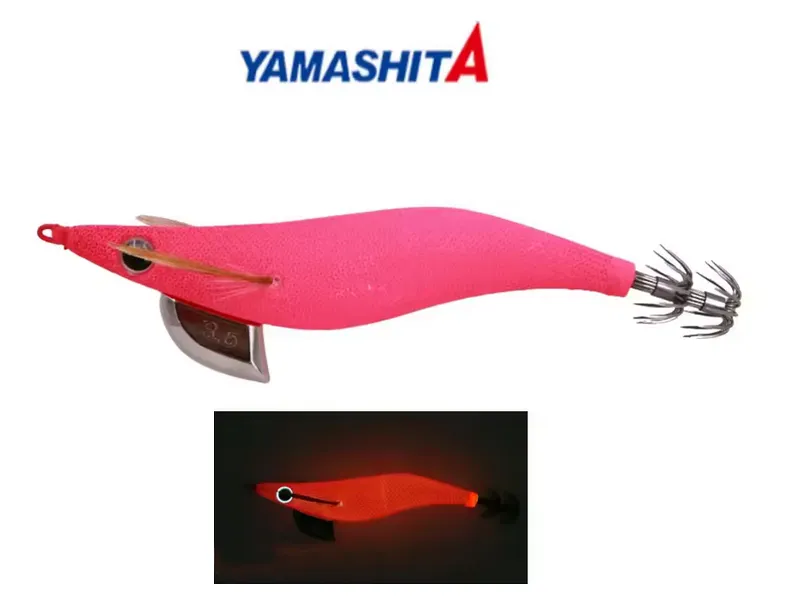

✅ Muy eficaz para baja visibilidad, aguas tomadas y noches con algo de luz.
| Condición | Eficiencia |
|---|---|
| 🌙🌗 Noche con luz | 🟢🟢 Muy alta |
| 🌊💧 Aguas tomadas | 🟢🟢 Muy alta |
| ☁️ Día nublado | 🟢 Alta |
| 🦑😴 Calamares pasivos | 🟡 Media |
| 🦑🔥 Calamares activos | 🟢🟢 Muy alta |